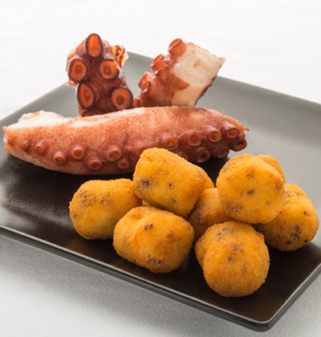

Octopus Croquette

Description
Os presentamos una de las mejores y más desconocidas recetas de la gastronomía española:
la sopa de ajo. Cuando te sientes a la mesa te verás fascinado de su sabor,
y no te quedará otra que dejarte seducir por su texturas, su olor y su fuerza.
Recomandamos acompopañarla con un vaso de vino tinto.
Ingredients
- Virgin olive oil
- 4 pieces of garlic
- Iberic ham
- Bread
- Paprika
- 2 eggs
Steps
- Dorar ajos y jamón ibérico en aceite y luego también el pan
- Echar pimentón dulce y tras cocinar un rato llenar con agua
- Dejar hervir el agua y añadir huevo
- Bajar temperatura y dejar que enfríe
- Servir cuando esté en una temperatura correcta (debe comerse caliente"
- Disfrutar!